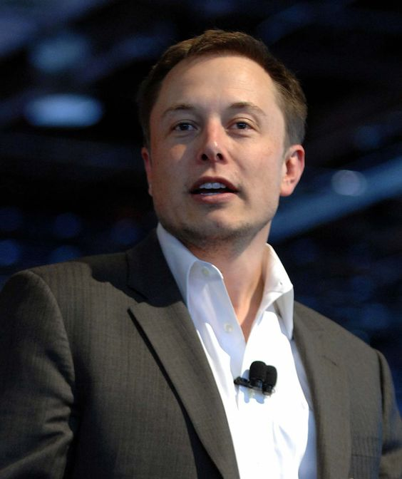

Elon Musk

A billionaire entrepreneur known for founding and leading companies like SpaceX and Tesla.
About the Legend
- Elon Musk was born in 1971 in South Africa.
- During his early years, he dedicated 10 hours per day to reading.
- Musk learned BASIC programming in just three days.
- In 1983, at the age of 12, he created a video game and sold it for $500.
- At 14, Elon Musk decided that his life mission was to save humanity.
- In 1989, he began his college journey in Ontario.
- In 1994, Musk earned economics and physics degrees from Wharton.
- After college, he worked two intern jobs and brainstormed entrepreneurial ideas.
- Elon Musk left his Stanford PhD program after just two days.
- In 1995, Musk co-founded Zip2 with his brother, coding it himself.
- After sleeping in the office for three months, he raised $3 million in investment and later sold his share for $22 million.
- In 1999, he founded X.com, an online bank, using his own money.
- In 2000, X.com merged with Confinity to form PayPal.
- Despite being ousted from PayPal as CEO in the same year, Musk continued to invest in the company.
- In 2001, Elon Musk moved to LA to be closer to the space industry and self-learned rocket building from books.
- In 2002, he founded SpaceX with $250 million from the sale of PayPal after discovering rocket prices were exorbitant.
- In 2004, Musk ventured into electric cars, founding Tesla with like-minded individuals.
- In 2006, his first rocket launch ended in failure, but he won NASA contracts and became the first investor in SolarCity.
- In 2008, TESLA faced financial crisis, but a successful rocket launch secured a NASA contract, and funding was found hours before bankruptcy.
- In 2009, Musk unveiled the Model S car.
- In 2010, TESLA went public at $17 per share.
- In 2011, Musk announced the project for reusable rockets and set a goal to send humans to Mars by 2031.
- In 2012, Model S shipping began, and Model X was unveiled with a supercharger network launched.
- In 2014, he started building the Gigafactory to mass-produce batteries.
- In 2015, Musk unveiled Powerwall, and TESLA customers received their Model X. A rocket launch failed, but the first reusable rocket landed successfully.
- In 2017, Musk founded The Boring Company, unveiled TESLA Roadster and Semi Electric Truck, and delivered the first Model 3 to customers.
- In 2018, Elon Musk launched his largest rocket, The Falcon Heavy.
- In 2021, TESLA's market capitalization surpassed $1 trillion, making it one of the most valuable companies globally.
- In 2022, Musk stepped down as CEO of TESLA but remained actively involved in various ventures, including SpaceX and Neuralink.
- In 2023, Musk announced plans for a new venture focused on sustainable energy and environmental initiatives.
- In 2024, Musk continued to push the boundaries of space exploration with SpaceX, aiming for ambitious missions to explore the Moon and further advance human exploration of Mars.